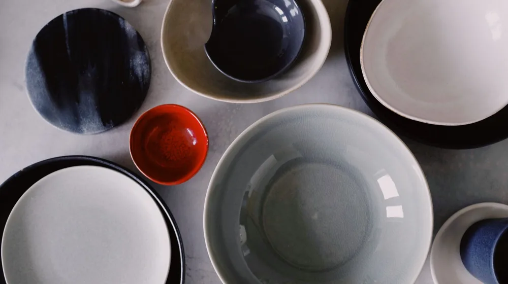

전통 공예품 현대 인테리어 매칭법: 실패 없는 4가지 체크리스트
사진: Jan van der Wolf / Pexels (무료 이미지, 출처 표기)
전통 공예, 현대식 인테리어와 어울릴까?

인사동에서 마음에 쏙 드는 도자기나 소반을 발견하고도 막상 사기를 망설인 적이 있으신가요? "우리 집 거실에 두면 혼자 튀어서 촌스러워 보이지 않을까?" 하는 걱정 때문일 것입니다. 결론부터 말씀드리면, 현대적인 아파트 인테리어와 한국 전통 공예품은 매우 훌륭한 조화를 이룹니다.
최근 인테리어 트렌드는 미니멀리즘과 자연 친화적 소재의 융합입니다. 한국공예디자인문화진흥원에 따르면 현대 주거 공간에 자연스럽게 스며드는 '생활 밀착형 공예'가 트렌드로 떠오르고 있습니다. 자연에서 온 나무, 흙, 종이로 만든 전통 공예품은 삭막한 현대식 아파트에 따뜻한 생기를 불어넣는 훌륭한 오브제가 됩니다.
실패 없는 전통 공예 매칭 4대 체크리스트
전통 공예품을 세련되게 배치하기 위해서는 몇 가지 간단한 규칙만 기억하면 됩니다. 전체 공간의 분위기를 깨지 않으면서도 공예품 고유의 멋을 살리는 실전 매칭법을 정리했습니다.
- 1. 톤온톤 컬러 매칭: 주변 가구와 톤을 맞추세요. 예컨대 월넛 톤의 원목 가구 위에는 옻칠 소반을, 화이트 톤 가구 위에는 백자나 투명한 유리 공예품을 올리는 식입니다.
- 2. 소재의 대비 활용: 차가운 현대적 소재(철제, 유리, 콘크리트) 옆에 따뜻한 전통 소재(한지, 옹기, 대나무)를 배치하면 극적인 세련미가 강조됩니다.
- 3. 크기 조절과 여백: 거실 한가운데 커다란 가구 전체를 전통 가구로 바꾸기보다는, 작은 소반이나 합(뚜껑이 있는 그릇) 등을 원포인트 소품으로 두는 것이 안전합니다.
- 4. 기능의 현대적 재해석: 제사용으로 쓰던 그릇을 현관의 열쇠 보관함으로 쓰거나, 전통 찻잔을 다육식물 화분으로 사용하는 등 새로운 쓰임새를 부여해 보세요.
공간별로 매칭하기 좋은 대표적인 조합을 아래 표로 확인해 보세요.
초보자에게 추천하는 3대 입문 공예품
어떤 소품부터 시작해야 할지 고민이라면 활용도가 가장 높은 세 가지 아이템을 제안합니다.
첫째는 소반입니다. 거실 소파 옆 사이드 테이블로 쓰거나 침대 머리맡 협탁으로 사용하기 좋습니다. 가볍고 이동이 편리해 필요에 따라 찻상이나 노트북 거치대로도 씁니다.
둘째는 한지 조명입니다. 은은하게 퍼지는 빛이 아파트 특유의 차가운 LED 백색광을 중화해 줍니다. 안방이나 거실 구석에 두면 아늑한 호텔식 분위기를 낼 수 있습니다.
셋째는 유기(놋그릇)나 백자 그릇입니다. 음식을 담는 용도 외에도 반지나 차 키를 담아두는 트레이로 활용하면 인테리어 완성도가 올라갑니다.
오래 두고 쓰는 소재별 관리 및 주의사항
전통 공예품은 자연 친화적 소재가 많아 관리에 세심한 주의가 필요합니다. 제대로 관리하지 않으면 갈라지거나 변색될 수 있으므로 아래 사항을 기억해 두세요.
목공예품(옻칠 포함) 관리: 원목이나 옻칠 제품은 온도와 습도 변화에 민감합니다. 직사광선이 내리쬐는 창가나 에어컨, 난방기 바람이 직접 닿는 곳은 피해야 갈라짐을 방지할 수 있습니다. 물기가 닿았다면 마른 수건으로 즉시 닦아내세요.
유기 제품 관리: 유기는 공기 중의 산소나 수분과 만나면 검게 변색될 수 있습니다. 얼룩이 생겼을 때는 초록색 수세미(건식)로 한 방향으로 밀어주면 본래의 은은한 금빛이 되살아납니다. 세척 후에는 물기를 완전히 제거해 보관해야 합니다.
한지 제품 관리: 종이 특성상 습기에 약하므로 욕실 주변이나 주방 싱크대 근처에는 두지 않는 것이 좋습니다. 먼지가 쌓였을 때는 물걸레 대신 가볍게 털어내는 정도로만 청소해 주세요.
신뢰할 수 있는 전통 공예품 고르는 법
시중에는 저렴한 모조품이나 해외 대량 생산 제품이 전통 공예품으로 둔갑해 유통되기도 합니다. 가치 있는 진품을 구매하고 싶다면 한국공예디자인문화진흥원에서 운영하는 공식 온·오프라인 숍을 이용하거나 우수공예품 지정 표시(K-Craft 마크)를 확인하는 것이 안전합니다.
수작업으로 제작되는 무형문화재 장인들의 작품은 가격대가 높지만, 그만큼 희소성과 소장 가치가 있습니다. 예산에 맞춰 대중적인 신진 공예 작가들의 모던한 리메이크 작품부터 시작해 보는 것도 좋은 방법입니다. 소중하게 고른 공예품 하나로 나만의 개성 넘치는 공간을 완성해 보시기 바랍니다.
🔗 이 글도 함께 보면 좋아요: 노트북 고를 때 후회 없는 4가지 핵심 사양 용어 체크리스트
관련 추천 상품
이 포스팅은 쿠팡 파트너스 활동의 일환으로, 이에 따른 일정액의 수수료를 제공받습니다.
한눈에 보는 상품 목록
미니 원목 소반
한지 테이블 스탠드 조명
미니 백자 도자기 화병